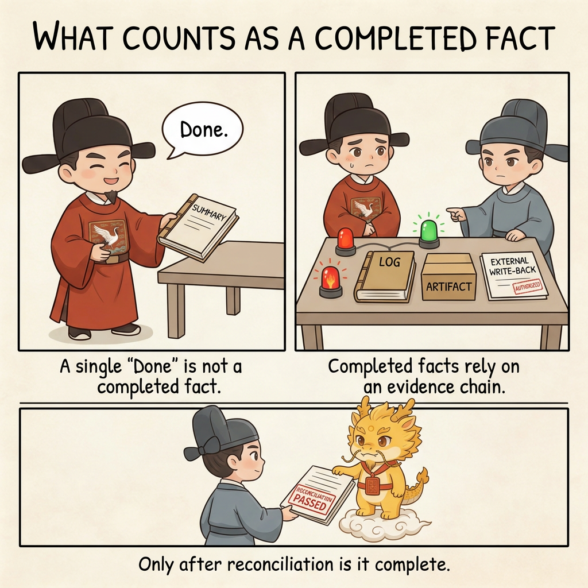
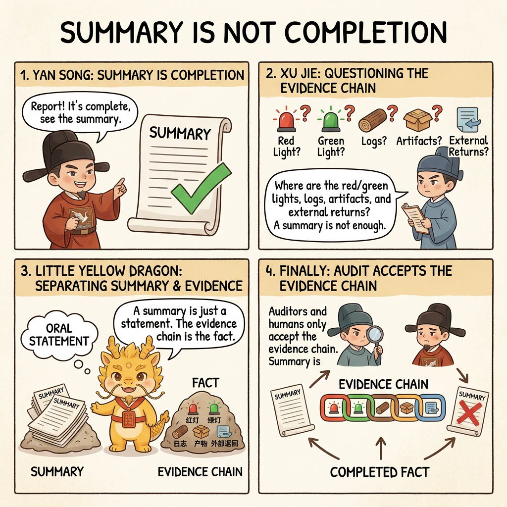
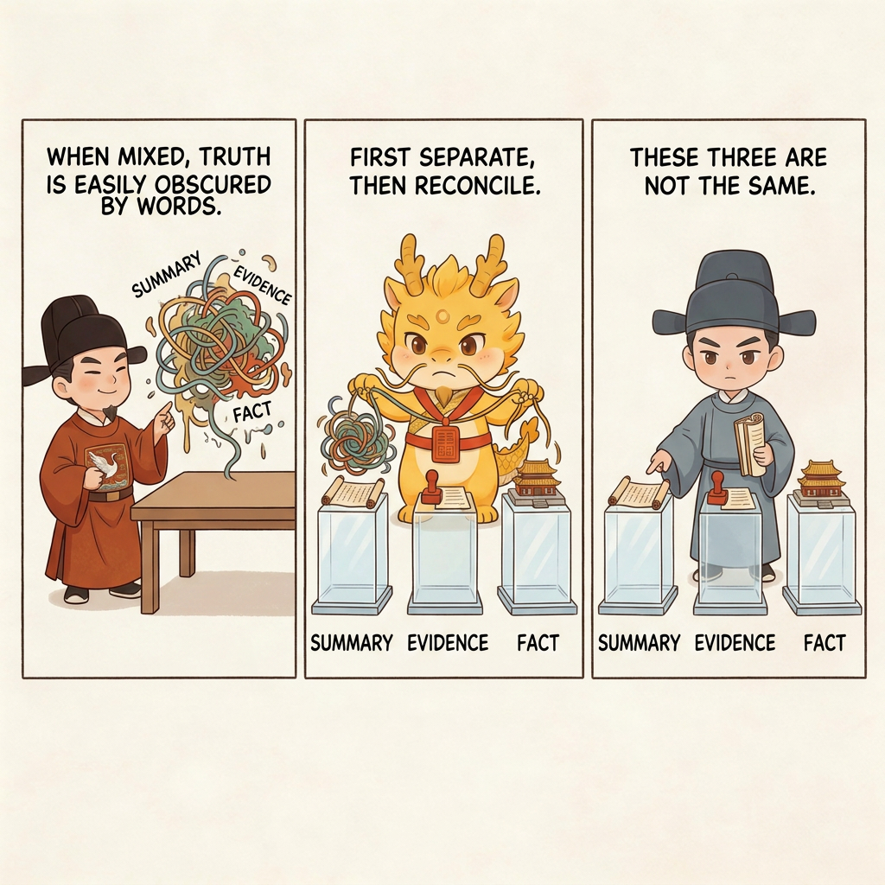
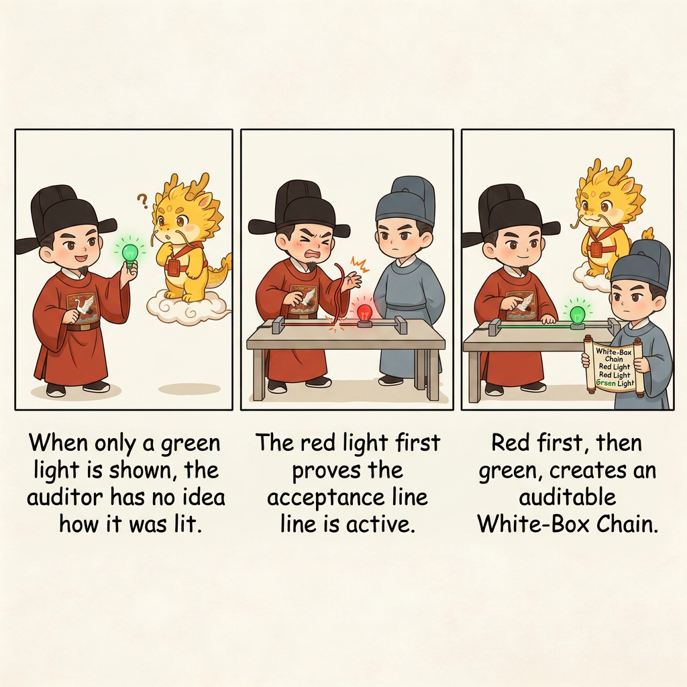
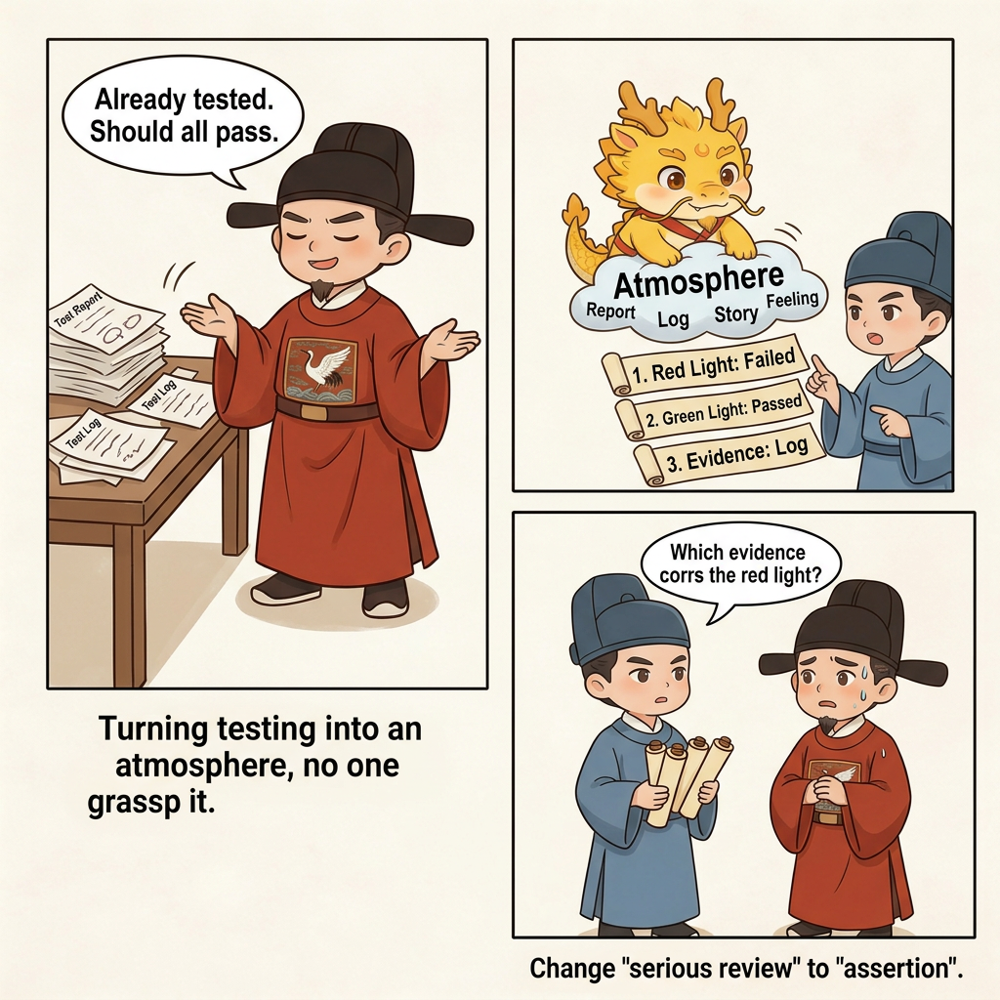

How
White-Box Physical Reconciliation

White-box Physical Reconciliation: What Counts as a Completion Fact
Table of Contents
- What This Page Solves
- One-line Summary First
- Separate Three Things First
- Why White-box Reconciliation Must Come After the Previous Two Pages
- Red Light Before Green Light: Why TDD Is Not Old-School Fastidiousness Here
- Turn Test Conditions into Assertions: Make "I Tested It" Auditable
- A Simple Scenario: Why an Old Batch Importer Can Fool an Audit So Easily
- The Simplest Way to Start: Ask for the Red Light, Then the Green Light, Then the Physical Evidence
- Give the Auditor Real Handles: Turn "Review Carefully" into Assertions
- Why We Say AI's Ability Is Forced Out, and AI Has No Right to Stay Silent
- Why It Relieves the Pain Points from Part 1
- Four Common Drifts
- One-line Summary
- Corresponding Implementation
- Related Pages
What This Page Solves
The previous two pages have already established two things:
- The executor must submit the Atomic Execution Contract first
- Every completed checklist item should leave behind the corresponding chronicle record
But that is still not enough. Even if the plan has been broken into fine-grained steps and the history has been recorded, the executor can still use one polished summary at the last moment to pull you into a more dangerous illusion:
it looks as if the work is already complete.
That is exactly what white-box physical reconciliation is for.
It does not ask, "Does this paragraph sound like completion?" It asks:
- Did a real red light appear?
- Did a real green light appear?
- Did a real artifact land?
- Did the real external system return anything?
- Does this evidence belong to this run, or is it actually an old artifact, simulated output, or verbal patching?
If the Atomic Execution Contract weakens the black box before execution, and the chronicles pin the history down during execution, then white-box physical reconciliation is what nails the truth down afterward.

One-line Summary First
The most important judgment in white-box physical reconciliation can be reduced to one sentence:
A summary is not a completion fact. An evidence chain is a completion fact.
And in the AI era, that sentence needs one more half-line:
AI's ability is forced out, and AI has no right to stay silent.
If you do not force it to hand over the red light, the green light, the logs, the artifacts, the return values, and the evidence of external writes, it will naturally tend to give you a respectable summary instead of an auditable truth.
Separate Three Things First
To reduce cognitive friction, start by separating the three things that are most easily mixed together.

First, the Summary
This is what the executor tells you:
- "It's fixed"
- "The tests passed"
- "The chain runs now"
- "We can keep adding features next"
The summary is not useless, but it is only a spoken layer. Its biggest problem is not that the language sounds bad. Its biggest problem is that it naturally carries the executor's position.
Second, the Verification Evidence
Verification evidence is what you can actually touch, compare, and interrogate, for example:
- Red-light test output
- Green-light test output
- Real logs
- Artifacts generated by the current run
- External-system write-back results
- Commit records corresponding to this change
Evidence does not automatically equal completion, but without evidence, there is no basis for talking about completion at all.
Third, the Completion Fact
A completion fact is not a sentence, and it is not one screenshot. A completion fact means:
- Evidence has appeared
- The evidence matches this round's goal
- The evidence matches this round's actual run
- The claim still stands after the auditor presses on it
In other words, a completion fact is a result that can survive reconciliation, not an executor's self-description.
Why White-box Reconciliation Must Come After the Previous Two Pages
There is a reason this page must follow Minimal Loop and Atomic Execution Contract & Chronicles. That sequencing is not accidental.
Because:
- Without the Atomic Execution Contract, you do not know what specific step you are verifying right now
- Without the chronicles, you do not know which state transition the evidence belongs to
- Without white-box reconciliation, the plan and history from the previous two pages can still be swapped out at the last second by one polished summary
So these three pages are really one line of defense:
- The Atomic Execution Contract nails down the granularity of the plan
- The chronicles nail down the history of advancement
- White-box reconciliation nails down the fact of completion
Remove any one of the three, and the whole line goes soft.
Red Light Before Green Light: Why TDD Is Not Old-School Fastidiousness Here
The TDD red-light/green-light logic matters here because it explains very plainly what should count as valid evidence.

The simplest possible version is:
- The red light proves the test line is alive
- The green light proves the feature now works
Why insist on red before green? Because if all you see is a green light at the start, the reconciler has no way to know how that light turned on.
It could mean:
- The test never hit the real target at all
- The test ran only an empty shell
- The test reused the old logic and never covered the new change
- The executor wrote the code first and then backfilled a test that could only pass
So the role of the red light is not to make people uncomfortable. It is to prove first that this acceptance line actually has teeth.
In AI coding, that move matters even more. Executors naturally prefer to show green results, and they rarely volunteer a red-light failure record on their own. They do not want to break the feeling of progress, and they do not want to look as if they failed. But from the viewpoint of white-box audit, the opposite is true:
without a red light, many green lights are not worth trusting.
Turn Test Conditions into Assertions: Make "I Tested It" Auditable
Red-light/green-light logic answers one question: is this test line alive? Assertions answer another: what exactly is this test line proving?

One of the executor's most effective rhetorical habits is to turn testing into an atmosphere:
- "I already tested it"
- "That case is fine now"
- "The related logic should all go through"
None of those statements are strong enough. A genuinely auditable test should not only create a vague impression of "it passed." It should give you an explicit assertion. For now, you can think of an assertion as a sentence that can be checked, falsified, and verified again.
For example, do not stop at a sentence like:
- "The import feature is fixed now"
Compress it into sharper assertions like these instead:
- When authentication fails, the system returns an explicit auth error instead of swallowing it silently
- After the fix, the same import command really writes to the database
- The import report comes from the current run rather than an old leftover file
- After a successful write, the logs show the corresponding record count or external return
The benefit is obvious: once the assertions are written clearly, the auditor stops saying only, "I have a feeling this is unfinished." It can instead press item by item:
- Where is the red light for this assertion?
- Where is the green light for this assertion?
- Where is the physical evidence for this assertion?
That is why red lights, green lights, and assertions form one matched set:
- The red light proves the test line is alive
- The green light proves the same problem was actually repaired
- The assertion proves what the red light and green light are even supposed to be checking
Only when all three are present do you have an auditable white-box test instead of a mere claim that "the executor already tested it."
A Simple Scenario: Why an Old Batch Importer Can Fool an Audit So Easily
Suppose there is an old batch importer that currently can do only one thing: write a batch of records into a local temporary file. This time, you want to upgrade it so that it will:
- Raise an explicit error when authentication fails
- Actually write to the database
- Generate an import report after the write
If the executor advances in black-box mode, it will very likely hand you a polished answer at the end:
- "The import succeeded"
- "The report was generated"
- "All tests passed"
The problem is that those three sentences may point to three completely different realities:
- "The import succeeded" may only mean the code path looked as if it could run
- "The report was generated" may only mean an old file was still sitting in the directory
- "All tests passed" may never have proved that a database write actually happened
If all you collect is the summary, you can be fooled very easily.
White-box physical reconciliation proceeds in the opposite way. It does not start by asking, "Does your story sound convincing?" It interrogates layer by layer:
- Where is the red light from before the fix?
- Where is the green light after the fix?
- Where is the report file from the current run?
- Where are the new records created by this run in the database?
- Do the logs contain explicit write feedback?
- Is all of this evidence really from the current run, or is it an old artifact, a simulated result, or a verbal patch?
Once the questioning gets this concrete, many things that looked like "completion" shrink instantly into "I assumed it should be complete."
The Simplest Way to Start: Ask for the Red Light, Then the Green Light, Then the Physical Evidence
The first time you do white-box physical reconciliation, do not make it heavier than it needs to be. The simplest version is just three steps.
Step 1: Ask for the Red Light First
First make the executor prove that the test line can actually bite. The simplest instruction is:
Do not show me only the passing result.
First reproduce the current failure and show me the red-light test, the error log, or the failing output.
I want to confirm that this acceptance line is real.If it cannot even reproduce the failure, do not rush to believe the later claim that it is now fixed.
Step 2: Then Ask for the Green Light
Once the red light has appeared, let it fix the problem and run again. At this stage, what you want is not a sentence like "it's done now," but something like:
Now show me the green light after the fix.
Use the same test and the same problem, and show me the real passing output.The key questions here are:
- Is it the same test?
- Is it the same problem?
- Did it really turn from red to green?
Step 3: Finally Ask for the Physical Evidence
If this task claims it generated an artifact, wrote to a database, exported a file, or called an external system, then add one more sentence:
In addition to the green light, show me the real evidence from the current run:
artifact paths, key logs, external returns, or database write results.
Do not give me simulated output. Do not give me old files.Those three steps together form the minimal white-box reconciliation loop.
Give the Auditor Real Handles: Turn "Review Carefully" into Assertions
Simply saying "please review carefully" does not actually help the auditor very much. A much stronger move is to turn the audit handle itself into explicit assertions.
Assertions do two things at once:
- They tell the auditor exactly what to grab
- They take away the executor's room to pass by atmosphere alone
The most stable method is not for the human to invent an assertion pack from thin air. It is this: make the IDE executor submit this round's assertions together with its report, then copy that assertion pack to the Web auditor along with the evidence.
In other words, the assertions should first be the executor's own clear statement of what it claims to have completed. The auditor's job is then to check, one by one, whether those assertions are actually supported by red lights, green lights, and physical evidence.
You can require the executor to hand in its work in a minimal format like this:
Do not just say "I tested it" or "I fixed it."
List the assertions you are claiming to have completed this round:
1. Which test or output was red before the fix
2. Which test or output turned green after the fix
3. Which artifact, log, or external return proves that this round really completed the claimIf you want something slightly more structured, the executor can also hand over a minimal assertion pack like this:
completion_assertions:
red_phase:
- failing_case_exists_before_fix: true
- failing_output_is_current_run: true
green_phase:
- same_case_passes_after_fix: true
- green_output_matches_target_behavior: true
physical_evidence:
- artifact_or_log_exists: true
- evidence_belongs_to_current_run: true
- no_simulated_output_used_as_proof: true
final_gate:
- summary_is_not_used_as_completion_fact: trueThen you copy that pack to the Web side together with the evidence. The Web side is not reviewing "whether there is a YAML file." It is reviewing whether the assertions in that YAML file actually stand up.
If YAML feels too formal, you can also make the executor submit a plain-language assertion pack instead:
These are the assertions I claim to have completed this round. Audit against the assertions:
1. There must be a real red light before the fix
2. There must be a real green light for the same problem after the fix
3. If I claim an artifact was generated or an external write succeeded, you need to see physical evidence from the current run
4. Simulated output, old files, and summary language may not be treated as completion factsThis step matters because it upgrades the auditor from "vaguely picking holes" to reconciling against real handles.
Why We Say AI's Ability Is Forced Out, and AI Has No Right to Stay Silent
This is the one judgment on this page that is most worth nailing down.
AI's natural tendency is not to volunteer the ugliest part of its own work. Its natural tendency is to preserve the feeling of progress, respectability, and continuity. It would much rather hand you:
- A green check
- A summary
- A reasonable explanation
- A suggestion for the next step
than proactively hand you:
- The red light
- The underlying error
- The conflict between an old artifact and a new artifact
- The fact that it never really ran through the chain
So if you do not force it, it will stay silent more easily. If you do not interrogate it, it will fill the gaps with summary language.
That is why white-box physical reconciliation is not a polite request. It is closer to an interrogation:
- Bring the red light
- Bring the green light
- Bring the logs
- Bring the artifact
- Bring the external return
If you cannot see them, then it does not count as complete yet.
Put differently:
AI's ability is often forced out. If you do not force it to hand over the truth, it will naturally prefer to hand over a respectable story.
Why It Relieves the Pain Points from Part 1
This page also has to connect back to 01-why/, otherwise white-box physical reconciliation is too easily misunderstood as nothing more than "a stricter testing workflow."
What it actually relieves are several structural pain points already established there.
First, It Relieves Technical Distortion
As Dual Distortion explains, the most dangerous thing about technical distortion is that error can disguise itself as progress.
White-box reconciliation answers that by refusing three things:
- It does not accept a green light by itself
- It does not accept a summary by itself
- It does not accept an explanation that merely sounds plausible
It forces the executor to submit the failure, the repair, the artifact, and the return together. That makes it far harder for error to hide behind the feeling of forward motion.
Second, It Relieves Governance Distortion
The core of governance distortion is that the executor also acts as the interpreter of the result. White-box reconciliation explicitly rejects that arrangement. The executor may supply materials, but it may not define completion merely by delivering its own closing statement.
It must hand over the materials, and the human plus the auditor must decide what those materials mean. That is how execution and characterization are separated again.
Third, It Relieves the Risk of Blind Review in a Partially Semi-Black-Box State
As CS vs Management explains, AI coding pushes the system toward a partially white-box, partially semi-black-box state. Once that is true, humans can no longer fully reread every step into clarity. The real value of white-box reconciliation is that it lets you approach the truth through evidence at the key moments even when you cannot fully reread everything.
Fourth, It Relieves Runaway Cognitive Debt
Without white-box reconciliation, cognitive debt is easiest to pile up through respectable-looking reports. Each round feels "basically done," but you never really know which link has already drifted.
If each round instead leaves behind:
- A red light
- A green light
- The current artifact
- The key logs
then when you come back later, you at least know what evidence the completion judgment rested on at the time rather than what rhetoric it rested on.
Four Common Drifts
Drift 1: Looking Only at the Green Light and Ignoring the Red Light
That leaves you unable to tell whether the test line was alive at all. Many apparent passes are only empty-shell passes.
Drift 2: Treating Simulated Results as Real Execution
If the evidence was not produced by the current run, it cannot directly count as completion evidence.
Drift 3: Treating Old Artifacts as New Evidence
If you do not verify the current run's identity, timestamp, or path, old files can easily impersonate fresh results.
Drift 4: Treating the Summary as the Completion Fact
If there is no red-light/green-light chain, no physical evidence, and no external return, the reconciliation is not finished.
One-line Summary
What white-box physical reconciliation ultimately nails down is not "did you write some code?" It nails down this:
what you have produced is either the truth of this run, or just an explanation polished enough to sound convincing.
And in the AI era, the only way to hold that line is to keep forcing it to hand over evidence until there is no room left for silence.
Corresponding Implementation
Manual Practice
- Manually demand three things from the executor: the red light, the green light, and the physical evidence
- Send assertions, logs, artifacts, external returns, and commit records together for audit; do not accept a green light alone or a summary alone
- If the evidence does not line up with this round's goal, this round's actual run, and the current commit state, do not pass it
Corresponding Skill
approved-checklist-executormaps most directly to this page because it requires post-execution verification results, target artifacts, andgit status --shortapproval-first-plannerhelps earlier by writing green tests and acceptance ladders into the plan, reducing later room for argument- But whether or not Skills are installed, the completion fact still depends on evidence, not on what the Skill says about itself
Corresponding Web Templates
- This page maps most directly to
completion_audit_template.md - If you suspect the current window is using polished reporting to cover an evidence gap,
succession_judge_template.mdcan help you decide whether a renewal is needed - For the collaboration boundary on the Web side, see Three Things